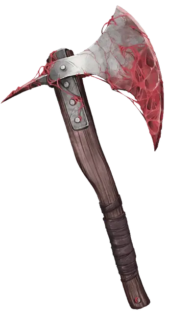

Руидиевое оружие
Ruidium Weapon
Оружие (любое), очень редкое (требуется настройка)

Рекомендованная стоимость 5 001-50 000 зм
Это магическое оружие имеет мутно ржавый цвет или прожилки руидия, пронизывающие его. Пока это оружие находится при вас, вы получаете следующие преимущества:
- Вы можете дышать под водой;
- Вы получаете скорость плавания, равную вашей скорости ходьбы.
Руидиевый удар. Существо по которому вы попадаете атакой этим оружием, дополнительно получает 2к6 урона психической энергией.
Руидиевая порча. Когда вы выбрасываете "1" при броске атаки, совершаемой с помощью этого оружия, вы должны совершить спасбросок Харизмы Сл 20. При провале вы получаете 1 степень истощения. Если вы ещё не страдаете от руидиевой порчи, вы становитесь подвержены ей, после того, как проваливаете этот спасбросок.
Если руидий будет уничтожен. Если Апофеон убит или освобождён, весь руидий в Экзандрии мгновенно уничтожается, а руидиевое оружие становится оружием +2.